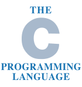

C (/siː/, as in the letter c) is a general-purpose, procedural computer programming language supporting structured programming, lexical variable scope, and recursion, while a static type system prevents unintended operations.
 By design, C provides constructs that map efficiently to typical machine instructions and has found lasting use in applications previously coded in assembly language.
Such applications include operating systems and various application software for computers, from supercomputers to embedded systems.
C was originally developed at Bell Labs by Dennis Ritchie between 1972 and 1973 to make utilities running on Unix.
Later, it was applied to re-implementing the kernel of the Unix operating system.
During the 1980s, C gradually gained popularity.
Nowadays, it is one of the most widely used programming languages, with C compilers from various vendors available for the majority of existing computer architectures and operating systems.
C has been standardized by the ANSI since 1989 (see ANSI C) and by the International Organization for Standardization.
C is an imperative procedural language.
It was designed to be compiled using a relatively straightforward compiler to provide low-level access to memory and language constructs that map efficiently to machine instructions, all with minimal runtime support.
Despite its low-level capabilities, the language was designed to encourage cross-platform programming.
A standards-compliant C program written with portability in mind can be compiled for a wide variety of computer platforms and operating systems with few changes to its source code.
The language is available on various platforms, from embedded microcontrollers to supercomputers.